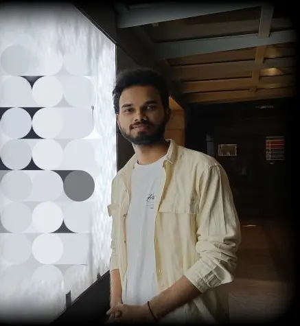
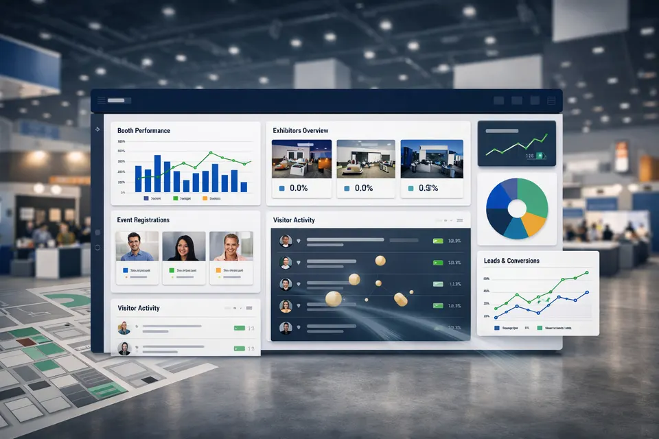
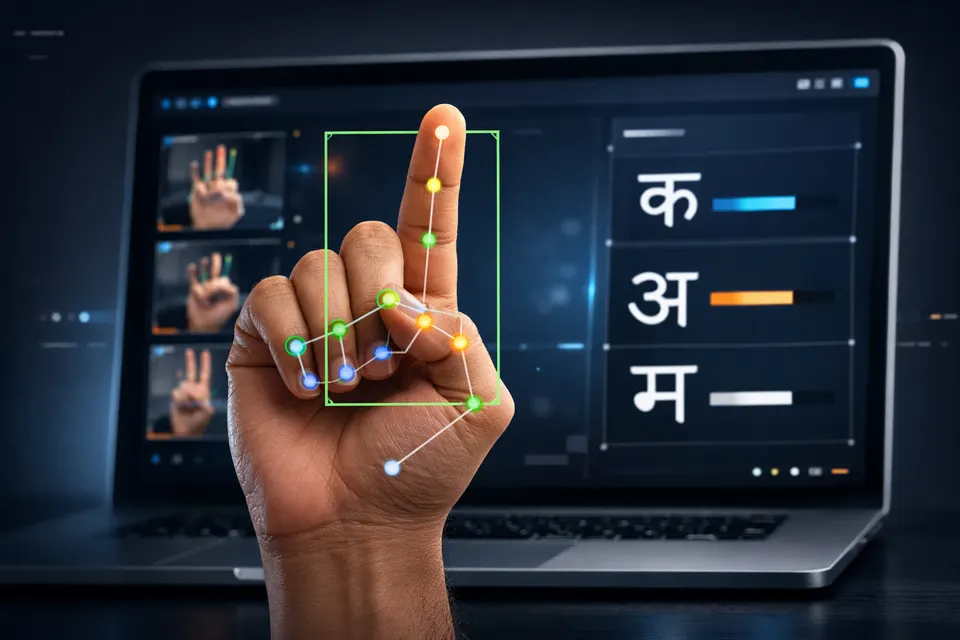

GenAI & LLM systems
Agent workflows, RAG, tool calling and context management for LLM applications that answer real users.
Open to AI engineering roles
GenAI • LLM Agents • Backend Systems
I build production-grade AI workflows and scalable APIs with Python, FastAPI, LangGraph and modern LLM tooling — currently on conversational AI at Yardi and the backend of WheelSafar.
Building intelligent systems that move from prototype to production.

01 — What I build
Agent workflows, RAG, tool calling and context management for LLM applications that answer real users.
Async Python services, clean REST APIs, database-backed systems and real-time features with WebSockets.
Turning a business problem into a working AI feature — not a demo that only runs on localhost.
Docker, AWS, CI/CD, logging, health checks and LLM tracing — the parts that keep it running.
02 — Experience
Working on ChatIQ, a production conversational-AI platform for property management.
Built and maintain the production backend powering a live mobility platform.
03 — Featured work
01
Production LLM agent platform · Yardi
Property teams field a constant stream of the same questions — what's available, can I tour, what's the rent, who fixes my sink. Answers depend on each property's own data and rules.
Keeping a non-deterministic agent predictable: scoping which tools can run, resolving ambiguous context across turns, and tracing failures through logs and LLM traces in production.
Described in general terms; no proprietary details.
02
Production mobility backend
The backend behind a live mobility platform — from ride booking to live tracking to rewards — built and run end to end.
FastAPI · SQLAlchemy · 60+ REST APIs · WebSockets
PostgreSQL on RDS · Redis · geospatial queries
Docker · EC2 · ALB · S3 · EventBridge · SSM
CloudWatch · health checks · FCM delivery
A mobility product needs more than CRUD: rides change state in real time, riders and drivers need live location, and notifications have to arrive reliably.
Clients reach containerised FastAPI services on EC2 through an Application Load Balancer. PostgreSQL on RDS is the system of record, Redis handles hot and real-time state, S3 stores media, EventBridge drives scheduled jobs, SSM holds configuration and CloudWatch covers logs and alarms.
[ADD VERIFIED METRIC — e.g. users, rides or uptime]
03
Conversational commerce · RAG + agents
An assistant that behaves like a good salesperson in a fashion store: it knows the catalogue, remembers what you bought and suggests what goes with it.

04
Export operating system for MSMEs
A platform that helps small exporters run shipments, documents and operations in one place.

05
Computer vision · ML
Real-time recognition of 47 Devnagiri sign classes using MediaPipe hand landmarks and ML/DL models.
04 — How I work
Error handling, health checks, logs and traces are part of the feature, not an afterthought.
LLMs belong inside real backends and workflows, with the same testing and reliability bar as any other service.
I try new AI tooling by shipping something small with it, then keep what holds up.
Currently going deeper on system design, distributed systems and production-scale AI.
05 — Stack
06 — Recognition
Global Top 100
Lung Capacity Enhancer, an IoT healthcare solution for pulmonary exercise, placed in the global top 100.
LinkedIn postWinner
Won the national hackathon with a healthcare prototype and earned an internship at Cognizant.
LinkedIn postNational runner-up
Healthcare MVP validated with users and prototype testing; awarded INR 1,00,000.
LinkedIn postNational level
Represented MGM University in national-level inter-university competition.
Education
Honours in Data Science · JNEC, MGM University
07 — Contact
Open to roles in GenAI, AI engineering, backend engineering and LLM / agentic AI at product companies and strong startups.